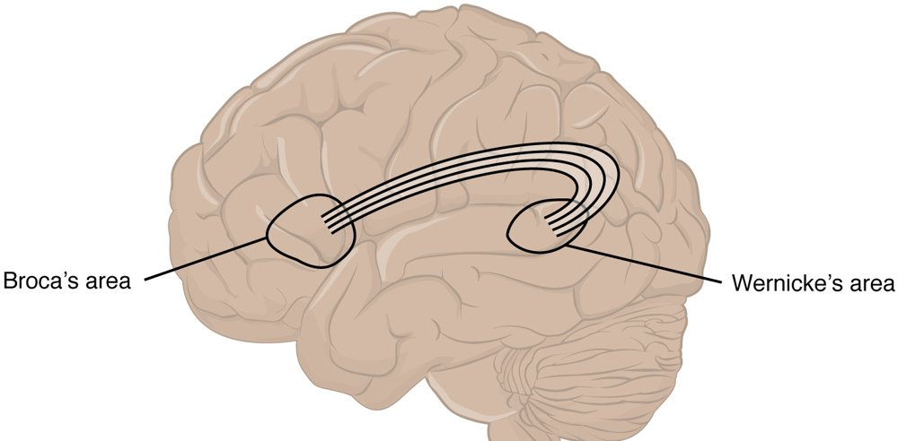
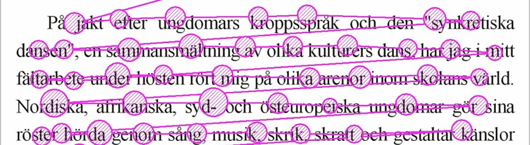

AIT3018 · Học kỳ I, năm học 2026-2027
Viện Trí tuệ nhân tạo · Trường Đại học Công nghệ, ĐHQGHN
Không ai dạy, nhưng trẻ năm tuổi đã nói “con mèo”, không nói “cái mèo”. Học tiếng Anh mười năm, vì sao ta vẫn hay nói “he go” thay vì “he goes”?
Câu “Lập luận của cậu không đứng vững” có dùng ẩn dụ không?
Có: lập luận được hiểu như một công trình xây dựng.
Language acquisition: trẻ có ngôn ngữ bằng cách nào
Cặp phân biệt của Stephen Krashen; khó kiểm chứng bằng thực nghiệm.
Tiếng Anh của các bạn có được nhờ thụ đắc hay nhờ học?
Bài Dąbrowska thảo luận ở Buổi 8 nghiêng về hướng nào?
Hướng thứ ba: ngôn ngữ học được nhờ các khả năng nhận thức chung.
↺ ngữ pháp mới quay lại định hướng cách nghe câu tiếp theo
Ngữ pháp phổ quát đóng vai trò tri thức tiên nghiệm (prior): giới hạn trước các ngữ pháp mà trẻ cần xét.
Buổi 8 ta ước tính trẻ nghe khoảng 42 triệu từ từ một đến năm tuổi. Llama 3 được huấn luyện trên bao nhiêu token?
Hơn 15 nghìn tỷ token, gấp khoảng 350.000 lần.
Hỗ trợ tạm thời ở vùng giữa, bớt dần khi trẻ tự làm được: giàn giáo (scaffolding).
Thuyết dựa trên sử dụng (usage-based): trẻ nắm từ và ngữ pháp nhờ gặp đi gặp lại các mẫu trong ngữ cảnh thật.
Trẻ nói tiếng Anh khoảng ba tuổi đôi khi nói “goed”, dù người lớn quanh trẻ chỉ nói “went”. Vì sao?
Trẻ khái quát hóa mẫu thêm -ed: quy tắc hóa quá mức (overregularization).
Câu vừa nghe có bao nhiêu từ? Từ này kết thúc và từ sau bắt đầu ở đâu?
Szeretemaforrókávétreggel.
tiếng Hungary, 5 từ: “Tôi thích cà phê nóng vào buổi sáng.”
Ví dụ “pretty baby” của Saffran, Aslin và Newport (1996). Trong thí nghiệm, trẻ 8 tháng tuổi nghe 2 phút một dòng âm tiết nhân tạo không ngắt (bi da ku pa do ti…), sau đó phân biệt được “từ” với chuỗi vắt qua ranh giới.
Tokenizer của mô hình ngôn ngữ gộp các mảnh chữ thành token theo cách nào? Giống trẻ ở điểm nào?
Gộp những mảnh hay đi liền nhau trong dữ liệu: cũng là học từ thống kê.
Lamendella (1977), neurofunctional theory: thụ đắc sơ cấp (primary) từ 2 đến 5 tuổi, thứ cấp (secondary) từ 5 tuổi.
Hệ giao tiếp (communication hierarchy): học trong môi trường tự nhiên. Hệ nhận thức (cognitive hierarchy): học qua luyện tập.
Người lớn nói “Bố đi ô tô rồi à?”, trẻ hai tuổi rưỡi nói “bố đi ô tô”. Trẻ thường bỏ những từ nào?
Hư từ (function words) như “rồi”, “à”; trẻ giữ lại thực từ.
Lenneberg (1967): giai đoạn tới hạn (critical period) mở khoảng 2 tuổi, đóng khoảng 12-13 tuổi.
Đường cong thoải dần, không rơi thẳng: nhiều nhà nghiên cứu gọi là giai đoạn nhạy cảm (sensitive period).
Học tiếng Anh sau 18 tuổi, phần nào khó đạt như người bản ngữ nhất: phát âm, ngữ pháp hay từ vựng?
Phát âm; người bắt đầu sớm thường đạt trình độ sau cùng cao hơn.
Sơ đồ vẽ lại theo Newman và cs. (2002), người nghe được thạo ngôn ngữ ký hiệu Mỹ (ASL).
Vì sao bằng chứng này chặt hơn các ca trẻ sống cô lập từ nhỏ?
Hai nhóm đều thạo ASL; khác biệt chính là tuổi bắt đầu học.
Song ngữ đồng thời (simultaneous): có hai tiếng từ khi sinh. Song ngữ nối tiếp (sequential): tiếng thứ hai đến sau.
Chuyển mã (code-switching): chuyển từ thứ tiếng này sang thứ tiếng kia trong một cuộc nói chuyện.
Lợi ích nhận thức: còn tranh luận; hiệu ứng nhỏ hơn nhiều so với cách báo chí thường nói.
Khi nói tiếng Anh, các bạn có thấy mình khác đi không? Chatbot đa ngữ có đổi “tính cách” theo ngôn ngữ của câu lệnh không?
Ngôn ngữ bị đẩy ra lề (linguistic marginalization): mất dần vị thế, người dùng và chỗ đứng trong nhà trường.
Tháp này gần trùng với cách xếp hạng ngôn ngữ nào trong xử lý ngôn ngữ tự nhiên?
Ngôn ngữ giàu tài nguyên và ít tài nguyên (high-/low-resource).
Language production: từ ý đến lời nói
Khi các bạn nói “thứ Ba… à không, thứ Tư”, khâu nào vừa làm việc?
↺ tự giám sát (self-monitoring): nghe cả lời nói thầm lẫn lời đã nói, phát hiện lỗi và sửa
Hiện tượng đầu lưỡi (tip of the tongue): người nói biết từ cần dùng, biết từ ấy có hai âm tiết nhưng không nói ra được. Quá trình bị kẹt ở tầng nào?
Đã chọn được từ, chưa lấy ra được âm vị.
Đảo âm đầu: lỗi ở tầng âm vị. Nhầm từ nghe gần giống: lỗi ở tầng chọn từ.
Lỗi lời nói (speech errors) là nguồn dữ liệu chính của mô hình sản sinh: Fromkin (1971), Garrett (1975).
Như vậy là lưới đã bay vào bóng, xin lỗi, lưới đã bay vào bóng!
BLV Tạ Biên Cương
Khi nói nhầm, người ta thường tạo ra một từ có nghĩa hơn là một chuỗi âm vô nghĩa. Vì sao?
Có thể do tự giám sát lọc bớt, hoặc do tầng từ kéo về từ có thật.
Language comprehension: từ âm thanh đến ý người nói
“Trong phòng này nóng nhỉ.” Nghe xong, người ta thường làm gì?
Ta hiểu được nhiều từ hơn số từ ta dùng khi nói.

Broca, thùy trán trái: sản sinh câu, điều khiển nói.
Wernicke, thùy thái dương trái: hiểu lời nói.
Hai vùng là nút chính trong một mạng rộng hơn.
Trí nhớ làm việc (working memory), mô hình nhiều thành phần của Baddeley.
Câu “Cái áo mà cô gái mà anh thích mặc hôm qua đẹp quá” khó hiểu ở đâu?
Phải giữ “cái áo” suốt hai mệnh đề lồng nhau: trí nhớ làm việc quá tải.
Tính sản sinh (productivity): vốn từ hữu hạn, câu vô hạn
Đây là ngôi nhà.
Đây là con chuột ăn miếng bánh trong ngôi nhà.
Đây là con mèo bắt con chuột ăn miếng bánh trong ngôi nhà.
Câu tiếng Việt dài nhất có bao nhiêu từ?
Không có câu dài nhất: tính đệ quy (recursion) cho phép lồng mãi.
So sánhtrẻ em như búp trên cành
Ẩn dụthuyền về có nhớ bến chăng
Hoán dụcả làng kéo ra xem
Nói quáchờ dài cả cổ
Nhân hóamáy tính lại dở chứng
Chơi chữcon ruồi đậu mâm xôi đậu
Tạo nghĩa mới mà không cần thêm từ mới.
Sáng tạo không cần âm thanh: không phụ thuộc kênh (modality-independent)
Khi thiết kế hệ nhận dạng ngôn ngữ ký hiệu, cách dùng không gian thay đại từ gây khó khăn gì?
Nghĩa nằm ở vị trí đã gán từ trước, không nằm trong một ký hiệu riêng lẻ.
7-38-55 là tỷ trọng mỗi kênh khi đoán người nói thích hay không thích mình, với một từ đơn lẻ mà lời và giọng mâu thuẫn
Khi xem một bộ phim nói thứ tiếng các bạn không biết, không có phụ đề, các bạn nắm được những gì?
Đoán được cảm xúc, không nắm được cốt truyện.
Language technology: máy làm được những khâu nào
▶ Thử nhận dạng và tổng hợp tiếng nói tiếng Việt
Trong sáu loại thông tin trên, loại nào khó nhận dạng chính xác nhất?
Cảm xúc: cùng một giọng, nhiều người nghe gán nhiều nhãn khác nhau.
Người dùng ra lệnh cho robot: “Đặt cái cốc kia lên bàn.” Ngoài câu lệnh, robot cần thêm thông tin gì?
Hướng nhìn hoặc tay chỉ: “cái cốc kia” là cốc nào.

Theo dõi ánh mắt (eye-tracking)
dừng càng lâu, từ càng khó
Thời gian phản ứng (reaction time)
trả lời càng chậm, câu càng khó
Đọc câu “The old man the boat.”, mắt người đọc khựng lại ở đâu?
Ở “the boat”: “man” là động từ. Câu lối vườn (garden-path sentence).
Luyện phát âmnghe giọng, chỉ âm sai (ELSA Speak)
Bài tập thích ứngchọn bài theo mức hiện tại (Duolingo)
Sửa câu viếtbắt lỗi ngữ pháp, gợi ý cách viết (Grammarly)
Luyện hội thoạichatbot đóng vai người đối thoại
Một ứng dụng chọn độ khó bài tập tiếp theo thế nào thì đúng với ý tưởng của Vygotsky?
Hơi khó hơn mức tự làm được, rồi giảm gợi ý dần.
Ở cả bốn hệ, ai quyết định máy sẽ nói gì?
Người dùng: mọi hệ bắt đầu từ đầu vào của người. Chưa hệ nào tự có ý định giao tiếp.
Kỹ thuật: nhập nhằng, phương ngữ và giọng, ngữ dụng, xử lý thời gian thực, gắn lời với hành động.
Đạo đức: thiên lệch dữ liệu (bias), thông tin sai lệch, quyền sở hữu, trách nhiệm giải trình (accountability).
Năm 2020, một nghiên cứu thử năm hệ nhận dạng tiếng nói thương mại với người Mỹ da đen và da trắng. Tỷ lệ lỗi chênh nhau bao nhiêu?
Gần gấp đôi: tỷ lệ lỗi từ (WER) trung bình 0,35 so với 0,19.
Đa ngôn ngữmột mô hình cho hàng trăm thứ tiếng
Hiểu ngữ cảnhý định, cảm xúc, tình huống
Robotlời nói gắn với hành động
Hỗ trợ tiếp cậndịch ngôn ngữ ký hiệu tức thời
Cùng sáng tạoviết, kể chuyện cùng AI
Trách nhiệmcông bằng, riêng tư, không bỏ sót ai
Mô hình ngôn ngữ lớn học ngôn ngữ giống đứa trẻ hay giống người học tiếng Anh?
Giống trẻ ở chỗ không ai dạy quy tắc; khác ở lượng dữ liệu và cách học.
Mở Quiz cuối buổi 9 trên Canvas.
8 câu về thụ đắc, sản sinh, hiểu ngôn ngữ và công nghệ ngôn ngữ. Làm một lần.
Hôm nay ta nói thụ đắc ngôn ngữ là phổ quát. Những kết luận ấy dựa trên dữ liệu của những ai?
Hạn nộp tiểu luận giữa kỳ: 23:59 Chủ nhật, 15/11/2026.